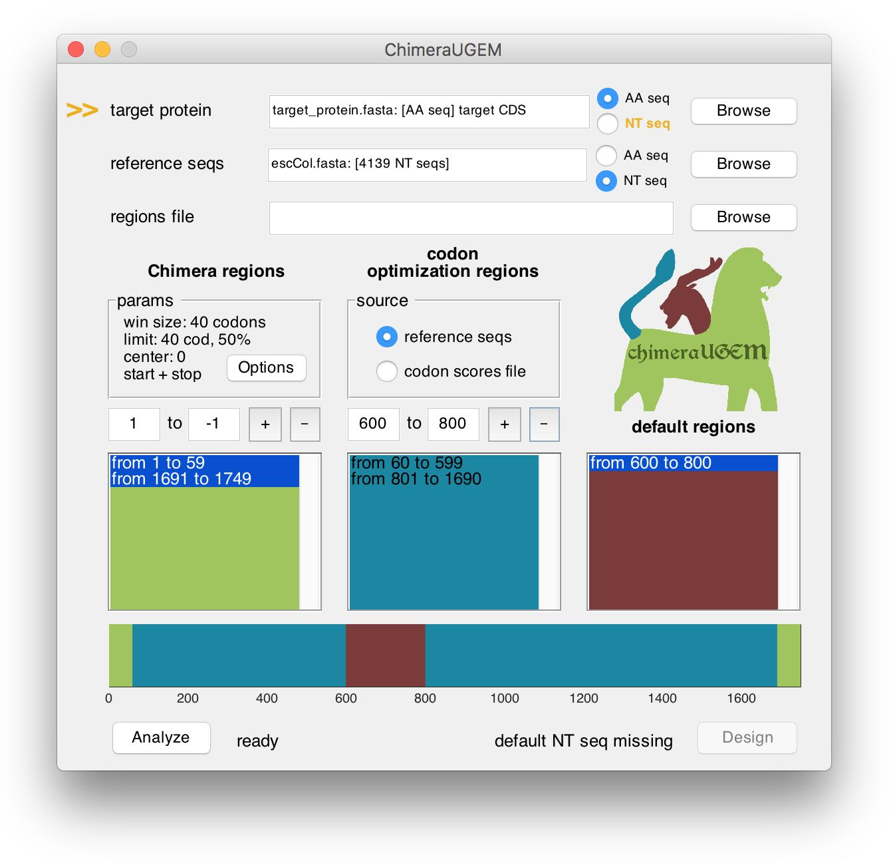
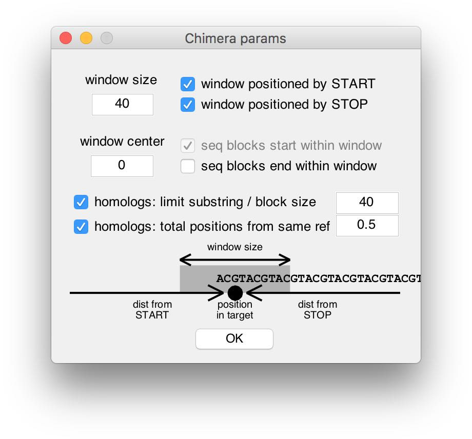

Diament, Weiner, Shahar, et al. cMapApp: unsupervised coding sequence optimization in any given organism. pre-print, 2018.
The cMapApp binaries and source code are provided freely for non-commercial use.
cMapApp provides tools for the designing the coding sequence of proteins for optimized expression, using the position-specific ChimeraMap algorithm and codon usage optimization. The following tutorial will guide you step-by-step in the design of a gene. The application also provides online hints and status messages for the user.
4. Additional design parameters
cMapApp supports fasta files containing nucleotide or amino acid sequences. Select the appropriate alphabet type (AA seq / NT seq), and then click on 'Browse' to select your file. When the fasta file contains multiple proteins, a window will pop-up in order to select the desired ones for optimization. You may select one or multiple proteins. While most of the following steps are applicable to both scenarios, batch optimization will be discussed in detail at the end of the tutorial.
The program will prompt when illegal chars appear in the sequence(s), it contains partial codons, or missing a stop codon.
Note, that NT seq targets can be used to define - in addition to the amino acid sequence - regions where the given sequence will be copied into the designed gene (additional details appear below).
As long as a target has yet to be selected, an arrow will point at the target protein field and a 'target missing' status will appear at the bottom right corner of the window.

cMapApp supports fasta files containing multiple nucleotide sequences. The given reference sequences may be used in 2 ways:
The program will prompt when illegal chars appear in the sequences, or when they contain partial codons.
As long as a reference set has yet to be selected, an arrow will point at the reference seqs field and a 'reference missing' status will appear at the bottom right corner of the window.

cMapApp allows the user to combine the 3 approaches described above (ChimeraMap, codon usage bias, and pre-defined NT sequences) by associating regions in the target protein with each method. When a target protein is first selected, ChimeraMap is automatically set to apply to the entire protein.
The bottom half of the window displays region definitions for the currently engineered target. Regions are listed in three separated columns, according to the associated method. At the bottom, a horizontal bar displays a map of the target gene, with positions colored according to the method that will apply to them (green: ChimeraMap, red: codon usage bias, blue: pre-defined sequence).
In practice, the way cMapApp handles multiple region types is by optimizing the complete target gene accroding to each method. Next, sub-sequences are copied from the two optimized genes (and the third source, if applicable). Therefore, it is possible that a ChimeraMap block will be splitted during this process, if it overlaps with a region boundary.
To add a new region, edit the text boxes in the respective column with the desired codon coordinates, and click on the '+' button. Note, that positive coordinates (such as 30 in the example below) are measured relatively to the 5'-end of the sequence, while negative coordinates (such as -30 in the example) are measured relatively to the 3'-end of the sequence (-1 being the last codon).

The program will prompt for user action when an added region is overlapping with an existing region. In the example above, the previously defined Chimera region from 1 to 583 was split, and a codon optimization region was inserted from 30 to 554 (the position that is 30cod from the target 3'-end).
To remove a region, edit the text boxes, and click on the '-' button. A removed region will be defined as 'default' (copied from a pre-defined NT sequence, see the example below).

Note, that when a default region is defined (and a target NT sequence is required), the program will prompt for missing target sequences. In the example above we provided an AA sequence for the target, so when a default region was created from 200 to 250, an arrow appeared next to the target protein field, and the status below showed 'default NT seq missing'. This can be ammended either by selecting a target NT seq, or by replacing the default region with either a ChimeraMap or a CUB region.
You may click the list boxes and the regions map to select a region and update the respective text boxes with its boundaries.
cMapApp supports fasta file (denoted with the extension '.reg') containing sequences comprised of the letters M (for ChimeraMap), C (for CUB), and D (for Default). The header (as well as length) of each record in the regions file should match one of the records in the target protein fasta. Each letter defines which of the methods will be applied to the corresponding codon position in the designed gene.
ChimeraMap parameters are summarized in a panel above the Chimera regions column. They can be edited by clicking on the 'options' button, which opens a new window. There, parameters can be edited and the defined search window is visualized. In order to use the traditoinal (non-position-specific) ChimeraMap algorithm, one can enter 0 in the window size field.

Codon parameters are set in a panel above the codon regions column. Codons can be optimized based on two souces:
For the second method, cMapApp supports tab-separated files. Synonymous codons with the highest optimality score will be used to encode the target protein. Codons with equal maixmal score will be drawn uniformly. The program will prompt when some AAs are not represented in the given table.
cMapApp generates two types of outputs:
| pos_s | pos_e | type | gene | gene_loc | block |
|---|---|---|---|---|---|
| 1 | 10 | codon: eColi.fasta | NaN | ||
| 9 | 12 | cMap | MEPS | 14 | GGGATTCCCGCG |
The table reports that the first 10 codons were optimized based on codon frequencies in E. coli, while codons 11-12 were taken from a cMap block beginning at codon 9 in the target protein (and beginning at codon 14 in the reference gene MEPS).
cMapApp supports batch optimization of multiple target proteins. One may select any number of targets from the fasta file in section 1. The rest of the workflow is similar, with the exception that the regions editor is not enabled when multiple targets are designed. If the design is based exclusively on ChimeraMap, there is no need for further action. Otherwise, region definitions must be provided via a regions file as described in section 3.2.